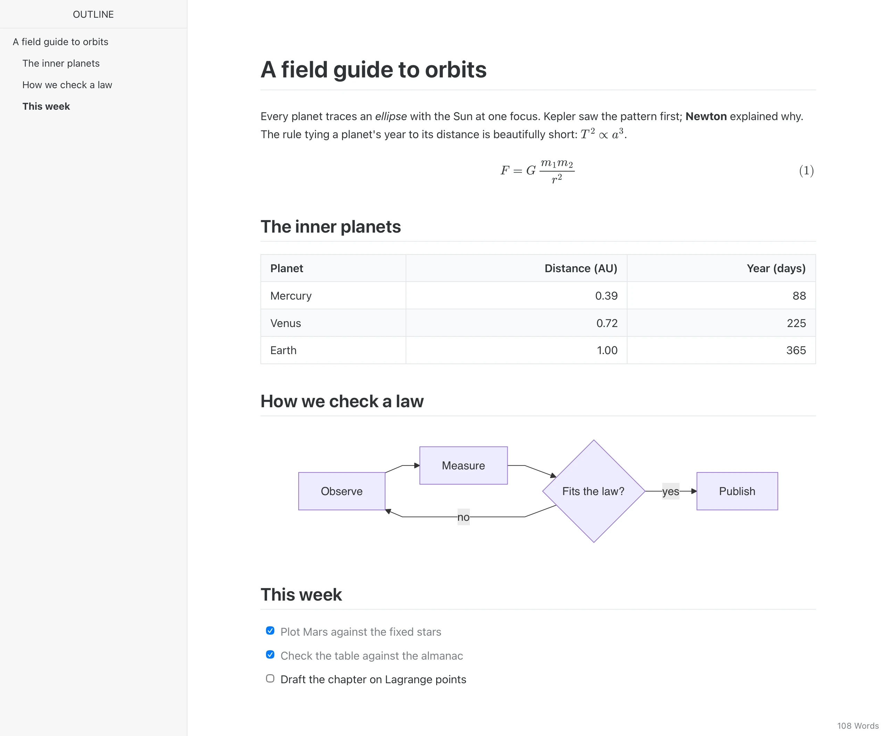
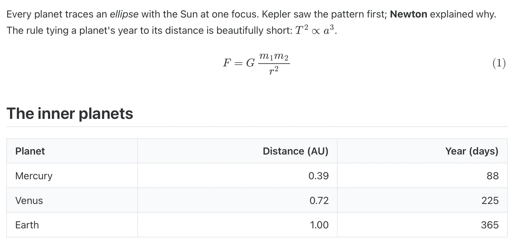
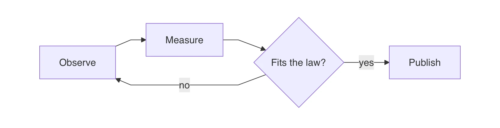
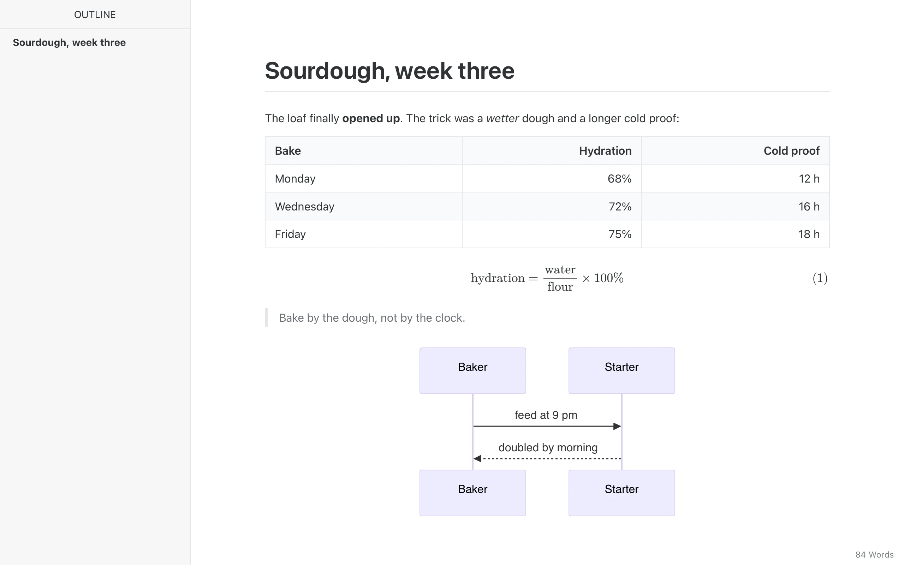
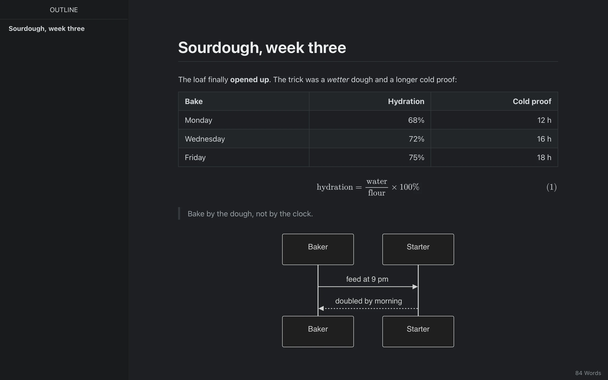
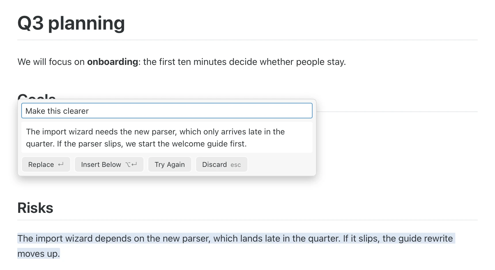
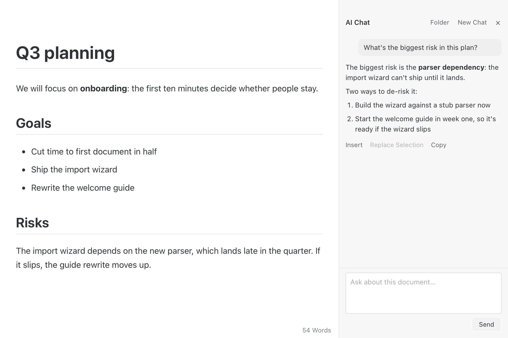
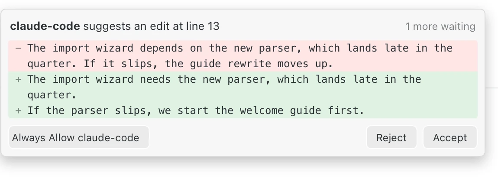
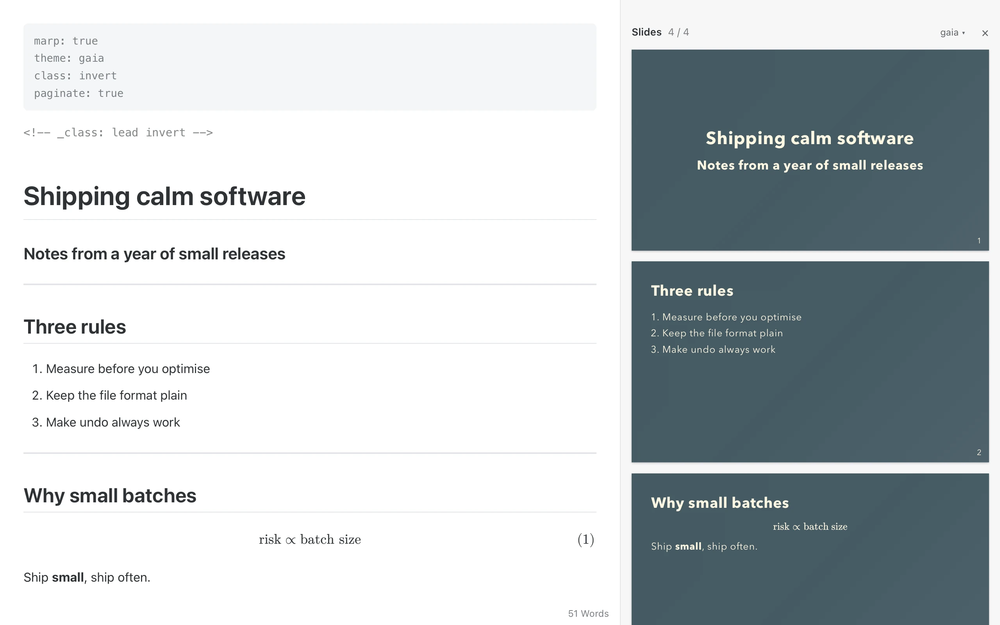

Syntax on demand
Step into a word and its ** appear. Step out and they fold away.
Free & open source A Markdown editor for macOS
Marpora renders tables, math, diagrams and slides in place, and shows the syntax only where your cursor is. A small native app built with Rust and Tauri.
macOS 12+, Apple Silicon & Intel · MIT licensed

01 Live preview
Markdown shows only around the cursor. Move on, and it becomes the finished page again. No split pane, no preview tab.
Step into a word and its ** appear. Step out and they fold away.

Tables, inline and display math (MathJax), code fences, footnotes, task lists, front matter and raw HTML.

Mermaid, flowchart and sequence diagrams draw right under their fence.
Drop to raw Markdown, dim everything but the paragraph you are in, or keep your line centred.
02 Themes
Marpora uses Typora's markup and class names, so Typora themes load as they are. Drop the CSS in the themes folder, or pick a bundled theme such as Marpora and Marpora Night.
Drag across the window to switch themes.


03 AI, built in
Bring the model you already use. Keys stay in the macOS Keychain.
Rewrites the selection or writes at the cursor. The answer streams in as a preview: ↵ accepts, Esc discards, and one ⌘Z undoes it.

A side panel that talks about the open document, or about every file in its folder. Answers go into the page with one click.

Works with
Use the Claude Code or Codex CLI you are already signed in to, with no key at all.
API keys live in the macOS Keychain.
Rewrite the passage in a warmer tone. Keep it short and keep every fact.
Custom prompts are plain Markdown files: the name is the prompt, the text is the instruction.
04 Agents via MCP
Claude Code, Codex and other MCP clients read and edit the documents open in Marpora, live. Every edit undoes with ⌘Z. Prefer to look first? Turn on Ask me first and accept or reject each change.
Claude Code
claude mcp add marpora -- /Applications/Marpora.app/Contents/MacOS/marpora mcp
Codex
codex mcp add marpora -- /Applications/Marpora.app/Contents/MacOS/marpora mcp

05 Slides
marp: true and it's a deck.Add one line of front matter and the document becomes a Marp deck. Write on the left, watch the slides on the right.

06 Files & export
Files, the outline, and search across every file in the folder.
Your work saves itself, and unsaved drafts come back after a crash.
Change the file in another app and the edits flow into the open document.
Word, OpenOffice, EPUB, LaTeX and more go through Pandoc.
07 Performance
Measured on an Apple Silicon Mac; editor timings in headless WebKit. Method and full results in docs/benchmarks.md.
08 Install
Marpora is ad-hoc signed, not notarized, so macOS asks once before the first launch.
Open Marpora.dmg and drag Marpora to Applications.
Gatekeeper blocks the first launch. Open System Settings › Privacy & Security and click Open Anyway. Or run:
xattr -dr com.apple.quarantine /Applications/Marpora.app
From then on, updates install from inside the app: Marpora › Check for Updates…
Free, open source and native to your Mac.
macOS 12+, Apple Silicon & Intel